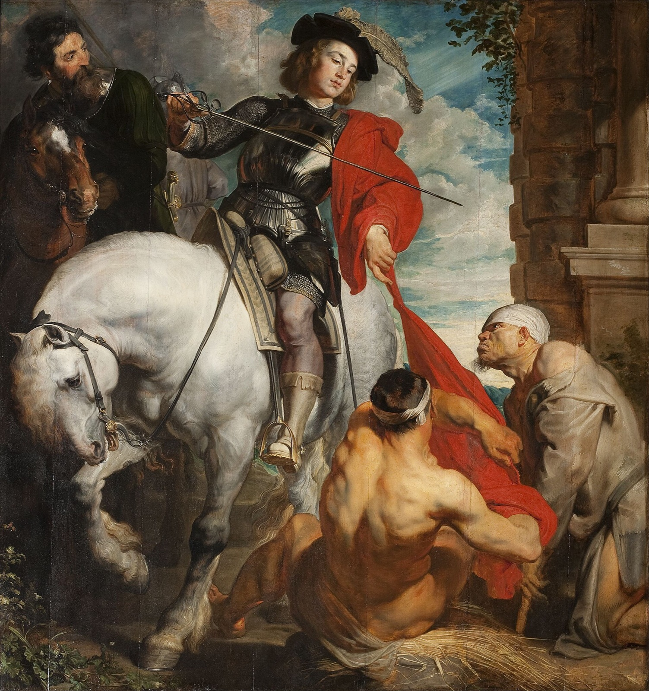

Soldato, monaco, vescovo · Memoria l'11 novembre
San Martino di Tours
Sabaria, in Pannonia, 316 circa – Candes, 8 novembre 397
«Signore, se sono ancora necessario al tuo popolo, non ricuso la fatica: sia fatta la tua volontà.» Le ultime parole di Martino, secondo Sulpicio Severo (Lettera 3)
Martino nacque ai confini dell'Impero, figlio di un ufficiale pagano, e fu soldato prima di essere cristiano. Un giorno d'inverno, alle porte di Amiens, tagliò in due con la spada il proprio mantello per coprire un povero: è il gesto per cui tutti lo ricordano. Lasciate le armi, fu discepolo di sant'Ilario di Poitiers, fondò a Ligugé uno dei primi monasteri dell'Occidente e nel 371 il popolo di Tours lo volle vescovo.
Per ventisei anni percorse a piedi le campagne della Gallia, annunciando il Vangelo ai contadini che le città avevano dimenticato. È fra i primi santi venerati senza avere subito il martirio. La Chiesa lo ricorda l'11 novembre, giorno della sua sepoltura a Tours, e il suo nome è rimasto a migliaia di chiese e di paesi in tutta Europa.
La vita
Dalla Pannonia a Pavia, dall'esercito al monastero, fino alla cattedra di Tours.
IIIl mantello
Il povero di Amiens e il sogno della notte seguente: il racconto, il significato, l'arte.
IIIL'11 novembre
L'estate di San Martino, il vino nuovo, i traslochi dei contadini, le oche e le lanterne.
IVI luoghi
Tours e la Francia, e le chiese di San Martino a Firenze e in Toscana.

- Vescovo di Tours
- 371 – 397
- Il suo biografo
- Sulpicio Severo
- Chiese dedicate in Italia
- oltre 900
- Sepoltura
- Basilica di San Martino, Tours